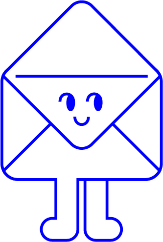

Partagez votre avis et votre utilisation des logiciels et outils libres ! Ces informations seront utilisées anonymement et uniquement dans le cadre d'un projet de diplôme en design graphique sur les communs numériques.
Le logiciel libre constitue une alternative concrète aux outils dits « propriétaires », comme ceux de Google, Microsoft ou Adobe. Le mouvement du libre défend le développement de logiciels respectueux de la neutralité du Net, sans secret industriel, et dont le code source est librement accessible, modifiable et partageable.
